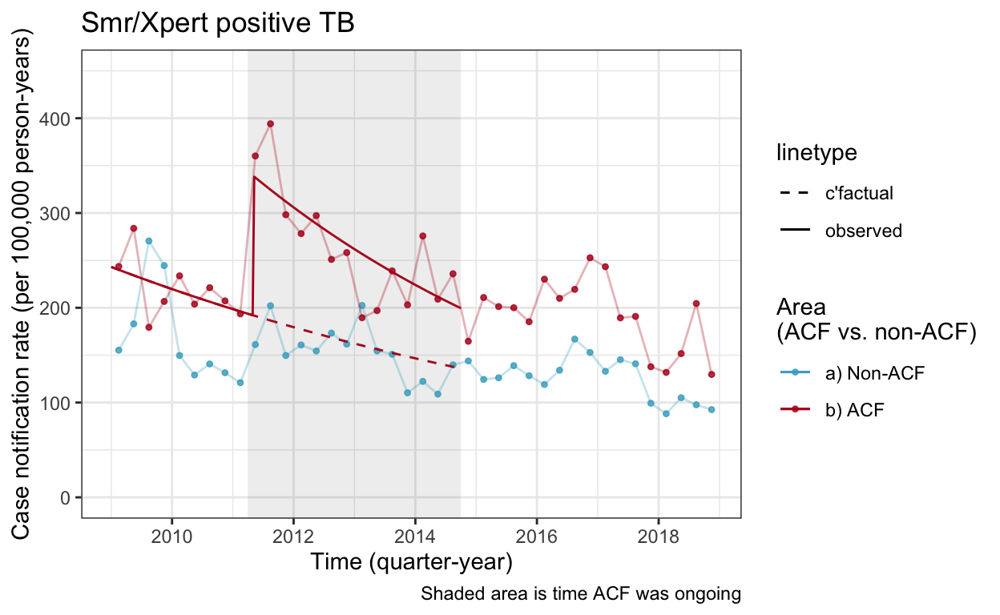

Code to analyse data and determine number (CI) TB notifications in interrupted time series analysis/es.
This is the code we used for implementing the analysis. Appendix XX in our paper shows the rationale and mathematical formula and will be useful for understanding this code.
This is in a mixture of tidverse and baseR (data.table); reflecting our collaboration!.
smp_c = bacteriologically confirmed at the clinic at time of starting TB treatment [smp = smear pos, but NB. misleading abbreviation as many Bac+ are Xpert pos]
all_f = all form TB
library(tidyverse)
library(lubridate)
library(here)
library(broom)
library(data.table)
acf_start_date <- dmy("01 April 2011")
acf_end_date <- dmy("30 Sep 2014")
# Data - take out post-ACF time
smp_c <- readRDS(here("data","cnrs_smp_clinic.rds")) %>% filter(acftime!="post-acf") %>% as.data.table()
all_f <- readRDS(here("data","cnrs_all.rds")) %>% filter(acftime!="post-acf") %>% as.data.table() # all form
# Base graphs (to illustrate model predictions / fit to real data as we go)
load(here("data/cnr_base_plot_micro_clinic.rdata"))
load(here("data/cnr_base_plot_all.rdata"))
t1 <- smp_c[acftime=='acf',min(yq_num)] # t1 = START of ACF
t2 <- smp_c[acftime=='acf',max(yq_num)] # t2 = END of ACF
T <- t2-t1+1 # plus one because goes from START of first quarter to END of last quarter; this is the TIME (in number of quarters) from ACF starting.
woc = without control.
mod.woc <- glm(data=smp_c[acfarea=="b) ACF"],
family=poisson,
n ~
offset(log(population)) +
(1 + yq_num) + # k_1 + s_1.t
acftime + acftime:yq_num # I(t)(a+b.t)
)
tidy(mod.woc)
# A tibble: 4 5
term estimate std.error statistic p.value
<chr> <dbl> <dbl> <dbl> <dbl>
1 (Intercept) -7.41 0.0722 -103. 0
2 yq_num -0.0264 0.0155 -1.70 0.0887
3 acftimeacf 0.696 0.131 5.32 0.000000101
4 yq_num:acftimeacf -0.0142 0.0170 -0.833 0.405 Use model and equation to get and plot point estimates for cases and CNR (all form and smear pos at clinic)
# Population during ACF time
P <- smp_c[acfarea=="b) ACF" & yq_num>=t1 & yq_num<=t2,population] # this is the population at any level
# The coefficient that go into estimating theta (= difference in cases / CNRs between "real" and "counterfactual")
theta.woc <- list(
itz=t1:t2, # itz it a vector of all the "acftime" quarters
Pop=P,
k=coef(mod.woc)['(Intercept)'],
s=coef(mod.woc)['yq_num'],
a=coef(mod.woc)['acftimeacf'],
b=coef(mod.woc)['yq_num:acftimeacf']
)
## Make data - numbers of diagnoses ("cases")
tz <- seq(from=min(smp_c$yq_num),to=max(smp_c$yq_num),by=0.1) #time as a near-continous variable
TZ <- smp_c[acfarea=="b) ACF",yq_num] # time as each quarter
It <- ifelse(tz>=t1 & tz<=t2,1,0) #indicator
nap <- with(data=theta.woc,{exp(k + s*tz)}) #counterfactual: cases per one person per quarter (ie. no offset term)
nap2 <- with(data=theta.woc,{exp(It*(a+b*tz))}) #ACF effect: cases per one person per quarter
napc <- (nap*nap2)[tz%%1==0] # what actually happened (ie. adding on ACF effect): cases per one person per quarter
pop <- smp_c[acfarea=="b) ACF",population] # population in ACF area
popc <- smp_c[acfarea=="a) Non-ACF",population] # population in non-ACF area (not needed now, but create for later 'with control' scenario)
# Note re "with" function (see "nap" / "nap2" / "napc") as I wasn't familar at first
# with = "Evaluate an R expression in an environment constructed from data, possibly modifying (a copy of) the original data."
# This is a line of code to evaluate "k + s*tz" and "It*(a+b*tz)" in an enviroment where those bits are what they are in theta.woc (but presumably also using the global environment, since tz is in global enviroment rather than in 'theta.woc; environment?)
# Make data including CNR
cnr1 <- with(data=theta.woc,{(exp(k + s*tz)) * 100000 * 4}) # cases per one person per quarter * 100,000 people * 4 quarters = CNR. In counterfactual (no ACF) conditions.
cnr2 <- with(data=theta.woc,{exp(It*(a+b*tz)) * 100000 * 4}) # cases per one person per quarter * 100,000 people * 4 quarters = CNR. Plus effect of ACF.
cnr3 <- (nap*nap2) * 100000 * 4
df_cnr_woc <- tibble(yq_num=tz,
yq= seq(from=min(smp_c$yq), to=max(smp_c$yq + months(3)), length.out = length(tz)), # make 'tz' correspond to real dates
cfact=cnr1,
real=cnr3)
df_cases_woc <- tibble(yq_num=TZ,
yq= seq(from=min(smp_c$yq), to=max(smp_c$yq + months(3)), length.out = length(TZ)),
cfact=nap[tz%%1==0] * pop,
real=(nap*nap2)[tz%%1==0] * pop)
## Plot using ggplot
cnr_base_plot_micro_clinic +
geom_line(aes(x=yq, y=cfact, linetype="c'factual", color="b) ACF"), data=df_cnr_woc) +
geom_line(aes(x=yq, y=real, linetype="observed", color="b) ACF"), data=df_cnr_woc) +
scale_linetype_manual(values=c(2,1)) +
scale_color_manual(values=c("#46ACC8","#B40F20","#E58601")) +
ylim(c(0,450))

Less annotation here, its the same as above.
# exactly same model, but run with new dataset for all form TB
mod.woc.allf <- glm(data=all_f[acfarea=="b) ACF"],
family=poisson,
n ~
offset(log(population)) +
(1 + yq_num) + # k_1 + s_1.t
acftime + acftime:yq_num # I(t)(a+b.t)
)
theta.woc.allf <- list(
itz=t1:t2,
Pop=P,
k=coef(mod.woc.allf)['(Intercept)'],
s=coef(mod.woc.allf)['yq_num'],
a=coef(mod.woc.allf)['acftimeacf'],
b=coef(mod.woc.allf)['yq_num:acftimeacf']
)
nap.af <- with(data=theta.woc.allf,{exp(k + s*tz)}) #counterfactual: cases per one person per quarter (ie. no offset term)
nap2.af <- with(data=theta.woc.allf,{exp(It*(a+b*tz))}) #ACF effect: cases per one person per quarter
napc.af <- (nap.af*nap2.af)[tz%%1==0] # what actually happened (ie. adding on ACF effect): cases per one person per quarter
cnr1.af <- with(data=theta.woc.allf,{(exp(k + s*tz)) * 100000 * 4}) # cases per one person per quarter * 100,000 people * 4 quarters = CNR. In counterfactual conditions.
cnr2.af <- with(data=theta.woc.allf,{exp(It*(a+b*tz)) * 100000 * 4}) # cases per one person per quarter * 100,000 people * 4 quarters = CNR. Plus effect of ACF.
cnr3.af <- (nap.af*nap2.af) * 400000
df_cnr_woc_af <- tibble(yq_num=tz,
yq= seq(from=min(smp_c$yq), to=max(smp_c$yq + months(3)), length.out = length(tz)), # make 'tz' correspond to real dates
cfact=cnr1.af,
real=cnr3.af)
df_cases_woc_af <- tibble(yq_num=TZ,
yq= seq(from=min(smp_c$yq), to=max(smp_c$yq + months(3)), length.out = length(TZ)),
cfact=nap.af[tz%%1==0] * pop,
real=(nap.af*nap2.af)[tz%%1==0] * pop)
cnr_base_plot_all +
geom_line(aes(x=yq, y=cfact, linetype="c'factual", color="b) ACF"), data=df_cnr_woc_af) +
geom_line(aes(x=yq, y=real, linetype="observed", color="b) ACF"), data=df_cnr_woc_af) +
scale_linetype_manual(values=c(2,1)) +
scale_color_manual(values=c("#46ACC8","#B40F20","#E58601")) +
ylim(c(0,850))
dpars <- c('k','s','a','b') # this is a list of the parameters in the equation / model [these are the alphanumeric versions of greek letters for the general equation, in the model they get meaningful names]
# expression = "Creates or tests for objects of mode "expression".
# This is the mathematical expression for the difference between the TB diagnoses over the sum of time (see appendix for equation in latex)
# Functions for the difference between real and counterfactual
# Need to differentiate by hand as R not clever enough to handle sum:
# These are all functions of "theta"; when we come to use this function, theta is defined in above chunks.
D.fun <- function(theta){
list2env(theta,envir = environment())
sum(Pop*(exp(a+k+(s+b)*itz)-exp(k+s*itz))) # cases
}
dD.fun <- function(theta){
list2env(theta,envir = environment())
c(sum(Pop*(exp(a+k+(s+b)*itz)-exp(k+s*itz))),
sum(Pop*itz*(exp(a+k+(s+b)*itz)-exp(k+s*itz))),
sum(Pop*(exp(a+k+(s+b)*itz))),
sum(Pop*itz*(exp(a+k+(s+b)*itz))))
}
# And version without population for CNR effects
Dcnr.fun <- function(theta){
list2env(theta,envir = environment())
mean((exp(a+k+(s+b)*itz)-exp(k+s*itz))*1e5*4)
}
dDcnr.fun <- function(theta){
list2env(theta,envir = environment())
c(mean((exp(a+k+(s+b)*itz)-exp(k+s*itz))*1e5*4),
mean(itz*(exp(a+k+(s+b)*itz)-exp(k+s*itz))*1e5*4),
mean((exp(a+k+(s+b)*itz))*1e5*4),
mean(itz*(exp(a+k+(s+b)*itz)))*1e5*4)
}
#' Checks: diagnoses / cases
df_cases_woc %>% filter(yq>=acf_start_date) %>% summarise(sum_real=sum(real), sum_cf=sum(cfact)) %>% mutate(diff=sum_real - sum_cf)
# A tibble: 1 3
sum_real sum_cf diff
<dbl> <dbl> <dbl>
1 1255. 775. 480.sum(pop*((nap2-1)*nap)[tz%%1==0]) #discrete version
[1] 480.134D.fun(theta.woc) #our formula - good!
[1] 480.134# Checks: CNR
df_cnr_woc %>% filter(yq_num%%1==0) %>% filter(yq>=acf_start_date) %>% summarise(mean_real=mean(real), mean_cf=mean(cfact)) %>% mutate(diff=mean_real - mean_cf)
# A tibble: 1 3
mean_real mean_cf diff
<dbl> <dbl> <dbl>
1 263. 162. 101.sum(((nap2-1)*nap)[tz%%1==0] * 100000 * 4)/ 14 # multiply by 100,000 people, by 4 quarters per year, divide by 14 months of ACF (as pre-ACF there are 0 extra cases)
[1] 100.977Dcnr.fun(theta.woc) # our formula - this is right
[1] 100.977#' The names in the variance-covariance matrix are in the same order as the gradient terms, so:
Sig.woc <- vcov(mod.woc)
rownames(Sig.woc) <- colnames(Sig.woc) <- dpars
#' Function to compute variance using delta approximation:
delta.se.woc <- function(theta,sig){
g <- dD.fun(theta)
V <- t(g) %*% sig %*% (g)
sqrt(V)
}
delta.se.woc(theta.woc, Sig.woc) #test - what is standard error?
[,1]
[1,] 143.8592delta.cnr.se.woc <- function(theta, sig){
g <- dDcnr.fun(theta)
V <- t(g) %*% sig %*% (g)
sqrt(V)
}
delta.cnr.se.woc(theta.woc, Sig.woc) #test - what is standard error?
[,1]
[1,] 29.89557#' This would give the estimate as 95% CI
woc.result <- c(D.fun(theta.woc),
D.fun(theta.woc) - 1.96*delta.se.woc(theta.woc, Sig.woc),
D.fun(theta.woc) + 1.96*delta.se.woc(theta.woc, Sig.woc))
woc.result
[1] 480.1340 198.1700 762.0981woc.cnr.result <- c(Dcnr.fun(theta.woc),
Dcnr.fun(theta.woc) -1.96*delta.cnr.se.woc(theta.woc, Sig.woc),
Dcnr.fun(theta.woc) + 1.96*delta.cnr.se.woc(theta.woc, Sig.woc))
woc.cnr.result
[1] 100.97697 42.38166 159.57229# And for the relative increase (rather than absolute increase)
# From PD email: "In short, the proportion relative increase CIs should be R - 1.96*s/M to R + 1.96*s/M." R = relative difference, M= mean CNR observed, s.e. = st. error
abs <- (df_cnr_woc %>% filter(yq_num%%1==0) %>% filter(yq>=acf_start_date) %>% summarise(mean_real=mean(real), mean_cf=mean(cfact)) %>% mutate(diff=mean_real - mean_cf))$diff
mean_cnr <- (df_cnr_woc %>% filter(yq_num%%1==0) %>% filter(yq>=acf_start_date) %>% summarise(mean_real=mean(real), mean_cf=mean(cfact)) %>% mutate(diff=mean_real - mean_cf))$mean_cf
rel_diff <- abs / mean_cnr
se <- delta.cnr.se.woc(theta.woc, Sig.woc)[1]
# Relative differences
c(rel_diff, (rel_diff - 1.96*se/mean_cnr),(rel_diff + 1.96*se/mean_cnr))
[1] 0.6220157 0.2610700 0.9829615Sig.woc.af <- vcov(mod.woc.allf)
rownames(Sig.woc.af) <- colnames(Sig.woc.af) <- dpars
woc.result.af <- c(D.fun(theta.woc.allf),
D.fun(theta.woc.allf) - 1.96*delta.se.woc(theta.woc.allf, Sig.woc.af),
D.fun(theta.woc.allf) + 1.96*delta.se.woc(theta.woc.allf, Sig.woc.af))
woc.result.af
[1] 1614.607 1245.178 1984.035woc.cnr.result.af <- c(Dcnr.fun(theta.woc.allf),
Dcnr.fun(theta.woc.allf) -1.96*delta.cnr.se.woc(theta.woc.allf, Sig.woc.af),
Dcnr.fun(theta.woc.allf) + 1.96*delta.cnr.se.woc(theta.woc.allf, Sig.woc.af))
woc.cnr.result.af
[1] 337.4240 260.5197 414.3283# And the relative difference
abs.af <- (df_cnr_woc_af %>% filter(yq_num%%1==0) %>% filter(yq>=acf_start_date) %>% summarise(mean_real=mean(real), mean_cf=mean(cfact)) %>% mutate(diff=mean_real - mean_cf))$diff
mean_cnr.af <- (df_cnr_woc_af %>% filter(yq_num%%1==0) %>% filter(yq>=acf_start_date) %>% summarise(mean_real=mean(real), mean_cf=mean(cfact)) %>% mutate(diff=mean_real - mean_cf))$mean_cf
rel_diff.af <- abs.af / mean_cnr.af
se.af <- delta.cnr.se.woc(theta.woc.allf, Sig.woc.af)[1]
c(rel_diff.af, (rel_diff.af - 1.96*se/mean_cnr),(rel_diff.af + 1.96*se/mean_cnr))
[1] 1.005841 0.644895 1.366787#' Here, I'm creating the factors by hand so that: 1) we can generate a counterfactual using `predict` to check this formula; 2) I understand the parametrization, rather than trying to reverse-engineer how default R syntax handles things. The notation follows that in the definitions section.
tmp <- copy(smp_c) %>% as.data.table() #make a copy of the data
tmp[,com:=ifelse(acfarea=="b) ACF",1,0)] #community indicator 1=ACF
tmp[,It:=ifelse(acftime=="acf",1,0)] #ACF time indicator (as above)
tmp[,tz:=yq_num] #time
tmp[,Ittz:=It*tz] #ACF:time
tmp[,Itc:=It*com] #ACF:community
tmp[,Ittzc:=It*tz*com] #ACF:time:community
#' Regression
mod.wc <- glm(data=tmp,
family=poisson,
n ~
offset(log(population)) +
1 +
com + # k_c
tz + #s.t
It +
Ittz + # control (A + B.t)*It
Itc +
Ittzc # ACF com increment (a+b.t)*It
)
summary(mod.wc)
Call:
glm(formula = n ~ offset(log(population)) + 1 + com + tz + It +
Ittz + Itc + Ittzc, family = poisson, data = tmp)
Deviance Residuals:
Min 1Q Median 3Q Max
-3.0975 -0.9402 -0.3503 0.8241 4.8351
Coefficients:
Estimate Std. Error z value Pr(>|z|)
(Intercept) -7.568890 0.046326 -163.381 < 2e-16 ***
com 0.259291 0.050310 5.154 2.55e-07 ***
tz -0.051830 0.009430 -5.496 3.88e-08 ***
It 0.132776 0.106859 1.243 0.21404
Ittz 0.023811 0.011255 2.116 0.03438 *
Itc 0.467066 0.153897 3.035 0.00241 **
Ittzc -0.012593 0.009347 -1.347 0.17790
---
Signif. codes: 0 '***' 0.001 '**' 0.01 '*' 0.05 '.' 0.1 ' ' 1
(Dispersion parameter for poisson family taken to be 1)
Null deviance: 433.48 on 45 degrees of freedom
Residual deviance: 124.99 on 39 degrees of freedom
AIC: 433.6
Number of Fisher Scoring iterations: 4#' Parameters from the w/control version
dparswc <- c('k0','k','s','A','B','a','b')
beta <- coef(mod.wc)
Sig.v <- Sig.wc <- vcov(mod.wc)
rownames(Sig.v) <- colnames(Sig.v) <- dparswc #same order, diff names
#' Parameters as list:
theta.wc <- list(
Pop=P, # (Does it matter than here "P" is just for ACF communities? (Defined earlier))
itz=t1:t2,
k0=beta['(Intercept)'],k=beta['com'],
s=beta['tz'],
## counter factual effect:
A=beta['It'],B=beta['Ittz'],
## full effect:
a=beta['Itc'],b=beta['Ittzc'])
# these were defined above, but recreating them here as a reminder that they exist
tz <- seq(from=min(smp_c$yq_num),to=max(smp_c$yq_num),by=0.1) #time
It <- ifelse(tz>=t1 & tz<=t2,1,0) #indicator
#' Check understanding of parameters - as before these are all per one person per quarter (haven't added on 'pop' term)
## nonACF com
napc <- with(data=theta.wc,{exp(k0 + s*tz + It*(A + B*tz))})
## ACF com - without ACF
napa0 <- with(data=theta.wc,{exp(k0+k + s*tz + It*(A + B*tz))}) # this is our counterfactual
## ACF com - with ACF
napa <- with(data=theta.wc,{exp(It*(a + b*tz))})*napa0
# And make into a tibble;
df_cnr_wc <- tibble(
yq_num=tz,
yq= seq(from=min(smp_c$yq), to=max(smp_c$yq + months(3)), length.out = length(tz)),
real=napa * 1e5 * 4,
nonacf=napc * 1e5 * 4,
cfact=napa0 * 1e5 * 4)
df_cases_wc <- tibble(
yq_num=TZ,
yq= seq(from=min(smp_c$yq), to=max(smp_c$yq + months(3)), length.out = length(TZ)),
nonacf=napc[tz%%1==0]*popc,
cfact=napa0[tz%%1==0]*pop,
real=napa[tz%%1==0]*pop)
# And plot;
cnr_base_plot_micro_clinic +
geom_line(aes(x=yq, y=real, linetype="observed", color="b) ACF"), data=df_cnr_wc) +
geom_line(aes(x=yq, y=nonacf, linetype="observed", color="a) Non-ACF"), data=df_cnr_wc) +
geom_line(aes(x=yq, y=cfact, linetype="c'fact", color="c) C'fact"), data=df_cnr_wc) +
scale_linetype_manual(values=c(2,1)) +
scale_color_manual(values=c("#46ACC8","#B40F20","#E58601")) +
ylim(c(0,420))
# Looks good!!
tmp2 <- copy(all_f) %>% as.data.table() #make a copy of the data
tmp2[,com:=ifelse(acfarea=="b) ACF",1,0)] #community indicator 1=ACF
tmp2[,It:=ifelse(acftime=="acf",1,0)] #ACF time indicator (as above)
tmp2[,tz:=yq_num] #time
tmp2[,Ittz:=It*tz] #ACF:time
tmp2[,Itc:=It*com] #ACF:community
tmp2[,Ittzc:=It*tz*com] #ACF:time:community
mod.wc.allf <- glm(data=tmp2,
family=poisson,
n ~
offset(log(population)) +
1 +
com + # k_c
tz + #s.t
It +
Ittz + # control (A + B.t)*It
Itc +
Ittzc # ACF com increment (a+b.t)*It
)
beta.allf <- coef(mod.wc.allf)
Sig.v.allf <- Sig.wc.allf <- vcov(mod.wc.allf)
rownames(Sig.v.allf) <- colnames(Sig.v.allf) <- dparswc #same order, diff names
# beta <- coef(mod.wc)
# Sig.v <- Sig.wc <- vcov(mod.wc)
# rownames(Sig.v) <- colnames(Sig.v) <- dparswc #same order, diff names
theta.wc.allf <- list(
Pop=P, # (Does it matter than here "P" is just for ACF communities? (Defined earlier))
itz=t1:t2,
k0=beta.allf['(Intercept)'],k=beta.allf['com'],
s=beta.allf['tz'],
## counter factual effect:
A=beta.allf['It'],B=beta.allf['Ittz'],
## full effect:
a=beta.allf['Itc'],b=beta.allf['Ittzc'])
napc.af <- with(data=theta.wc.allf,{exp(k0 + s*tz + It*(A + B*tz))})
napa0.af <- with(data=theta.wc.allf,{exp(k0+k + s*tz + It*(A + B*tz))}) # this is our counterfactual
napa.af <- with(data=theta.wc.allf,{exp(It*(a + b*tz))})*napa0.af
# And make into a tibble;
df_cnr_wc_af <- tibble(
yq_num=tz,
yq= seq(from=min(smp_c$yq), to=max(smp_c$yq + months(3)), length.out = length(tz)),
real=napa.af * 1e5 * 4,
nonacf=napc.af * 1e5 * 4,
cfact=napa0.af * 1e5 * 4)
df_cases_wc_af <- tibble(
yq_num=TZ,
yq= seq(from=min(smp_c$yq), to=max(smp_c$yq + months(3)), length.out = length(TZ)),
nonacf=napc.af[tz%%1==0]*popc,
cfact=napa0.af[tz%%1==0]*pop,
real=napa.af[tz%%1==0]*pop)
# And plot;
cnr_base_plot_all +
geom_line(aes(x=yq, y=real, linetype="observed", color="b) ACF"), data=df_cnr_wc_af) +
geom_line(aes(x=yq, y=nonacf, linetype="observed", color="a) Non-ACF"), data=df_cnr_wc_af) +
geom_line(aes(x=yq, y=cfact, linetype="c'fact", color="c) C'fact"), data=df_cnr_wc_af) +
scale_linetype_manual(values=c(2,1)) +
scale_color_manual(values=c("#46ACC8","#B40F20","#E58601")) +
ylim(c(0,850))
dparswc <- c('k0','k','s','A','B','a','b')
Dwc.fun <- function(theta){
list2env(theta,envir = environment())
sum(Pop*(exp(a+b*itz)-1)*exp(k0+k+A+(s+B)*itz)) # this is for cases
}
## diff by k,s,a,b,abar,bbar
dDwc.fun <- function(theta){
list2env(theta,envir = environment())
c(
sum(Pop*(exp(a+b*itz)-1)*exp(k0+k+A+(s+B)*itz)), #(Again, this definitely right with "Pop" just being ACF area?)
sum(Pop*(exp(a+b*itz)-1)*exp(k0+k+A+(s+B)*itz)),
sum(Pop*(exp(a+b*itz)-1)*exp(k0+k+A+(s+B)*itz)*itz),
sum(Pop*(exp(a+b*itz)-1)*exp(k0+k+A+(s+B)*itz)),
sum(Pop*(exp(a+b*itz)-1)*exp(k0+k+A+(s+B)*itz)*itz),
sum(Pop*(exp(a+b*itz))*exp(k0+k+A+(s+B)*itz)),
sum(Pop*(exp(a+b*itz)*itz)*exp(k0+k+A+(s+B)*itz))
)
}
#' and the CNR versions without population
Dwc.cnr.fun <- function(theta){
list2env(theta,envir = environment())
mean((exp(a+b*itz)-1)*exp(k0+k+A+(s+B)*itz)*1e5*4)
}
dDwc.cnr.fun <- function(theta){
list2env(theta,envir = environment())
c(
mean((exp(a+b*itz)-1)*exp(k0+k+A+(s+B)*itz)*1e5*4),
mean((exp(a+b*itz)-1)*exp(k0+k+A+(s+B)*itz)*1e5*4),
mean((exp(a+b*itz)-1)*exp(k0+k+A+(s+B)*itz)*itz*1e5*4),
mean((exp(a+b*itz)-1)*exp(k0+k+A+(s+B)*itz)*1e5*4),
mean((exp(a+b*itz)-1)*exp(k0+k+A+(s+B)*itz)*itz*1e5*4),
mean((exp(a+b*itz))*exp(k0+k+A+(s+B)*itz)*1e5*4),
mean((exp(a+b*itz)*itz)*exp(k0+k+A+(s+B)*itz)*1e5*4)
)
}
#' Check formula against predictions: YES
df_cases_wc %>% filter(yq_num%%1==0) %>% filter(yq>=acf_start_date) %>% summarise(real=sum(real), cfact=sum(cfact), nonacf=sum(nonacf)) %>% mutate(diff=real - cfact)
# A tibble: 1 4
real cfact nonacf diff
<dbl> <dbl> <dbl> <dbl>
1 1255. 951. 1638. 304.Dwc.fun(theta.wc)
[1] 304.1835sum(pop*(napa-napa0)[tz%%1==0])
[1] 304.1835#' Check CNRs
df_cnr_wc %>% filter(yq_num%%1==0) %>% filter(yq>=acf_start_date) %>% summarise(real=mean(real), cfact=mean(cfact), nonacf=mean(nonacf)) %>% mutate(diff=real - cfact)
# A tibble: 1 4
real cfact nonacf diff
<dbl> <dbl> <dbl> <dbl>
1 263. 199. 154. 64.1sum((napa-napa0)[tz%%1==0]) # as above this isn't quite right, but not sure how to fix it. Probably doesn't matter though.
[1] 0.002242842Dwc.cnr.fun(theta.wc)
[1] 64.08121#' Function to compute variance using delta approximation:
delta.se.wc <- function(theta, sv){
g <- dDwc.fun(theta)
V <- t(g) %*% sv %*% (g)
sqrt(V)
}
delta.se.wc(theta.wc, Sig.v) #check
[,1]
[1,] 63.9933delta.cnr.se.wc <- function(theta, sv){
g <- dDwc.cnr.fun(theta)
V <- t(g) %*% sv %*% (g)
sqrt(V)
}
delta.cnr.se.wc(theta.wc, Sig.v) #check
[,1]
[1,] 13.41644#' This would give the estimate as 95% CI
wc.result <- c(Dwc.fun(theta.wc),
Dwc.fun(theta.wc) - 1.96*delta.se.wc(theta.wc, Sig.v),
Dwc.fun(theta.wc) + 1.96*delta.se.wc(theta.wc, Sig.v))
wc.result
[1] 304.1835 178.7566 429.6103#' CNR result
wc.cnr.result <- c(Dwc.cnr.fun(theta.wc),
Dwc.cnr.fun(theta.wc) -
1.96*delta.cnr.se.wc(theta.wc,Sig.v),
Dwc.cnr.fun(theta.wc) +
1.96*delta.cnr.se.wc(theta.wc,Sig.v))
wc.cnr.result
[1] 64.08121 37.78498 90.37744# And relative increase
abs <- wc.cnr.result[1]
M <- (df_cnr_wc %>% filter(yq_num%%1==0) %>% filter(yq>=acf_start_date) %>% summarise(real=mean(real), cfact=mean(cfact), nonacf=mean(nonacf)) %>% mutate(diff=real - cfact))$cfact
R <- abs / M
se <- delta.cnr.se.wc(theta.wc,Sig.v)[1]
(R - 1.96*se/M)
[1] 0.1896512(R + 1.96*se/M)
[1] 0.4536245R
[1] 0.3216378wc.result.af <- c(Dwc.fun(theta.wc.allf),
Dwc.fun(theta.wc.allf) - 1.96*delta.se.wc(theta.wc.allf, Sig.v.allf),
Dwc.fun(theta.wc.allf) + 1.96*delta.se.wc(theta.wc.allf, Sig.v.allf))
wc.result.af
[1] 1142.2298 964.4464 1320.0132wc.cnr.result.af <- c(Dwc.cnr.fun(theta.wc.allf),
Dwc.cnr.fun(theta.wc.allf) -1.96*delta.cnr.se.wc(theta.wc.allf, Sig.v.allf),
Dwc.cnr.fun(theta.wc.allf) + 1.96*delta.cnr.se.wc(theta.wc.allf, Sig.v.allf))
wc.cnr.result.af
[1] 239.4112 202.1827 276.6397# And relative increase
abs.af <- wc.cnr.result.af[1]
M.af <- (df_cnr_wc_af %>% filter(yq_num%%1==0) %>% filter(yq>=acf_start_date) %>% summarise(real=mean(real), cfact=mean(cfact), nonacf=mean(nonacf)) %>% mutate(diff=real - cfact))$cfact
R.af <- abs.af / M.af
se.af <- delta.cnr.se.wc(theta.wc.allf,Sig.v.allf)[1]
(R.af - 1.96*se.af/M.af)
[1] 0.4664203(R.af + 1.96*se.af/M.af)
[1] 0.6381872R.af
[1] 0.5523037For table 2 (see b_tableandfig.Rmd)
a <- df_cases_woc %>% filter(yq>=acf_start_date) %>% summarise(sum_real=sum(real), sum_cf=sum(cfact)) %>% mutate(diff=sum_real - sum_cf)
c <- df_cnr_woc %>% filter(yq_num%%1==0) %>% filter(yq>=acf_start_date) %>% summarise(mean_real=mean(real), mean_cf=mean(cfact)) %>% mutate(diff=mean_real - mean_cf)
a <- round(a)
c <- round(c)
woc.result <- round(woc.result,digits=0)
woc.cnr.result <- round(woc.cnr.result,digits=0)
b <- df_cases_woc_af %>% filter(yq>=acf_start_date) %>% summarise(sum_real=sum(real), sum_cf=sum(cfact)) %>% mutate(diff=sum_real - sum_cf)
d <- df_cnr_woc_af %>% filter(yq_num%%1==0) %>% filter(yq>=acf_start_date) %>% summarise(mean_real=mean(real), mean_cf=mean(cfact)) %>% mutate(diff=mean_real - mean_cf)
b <- round(b)
d <- round(d)
woc.result.af <-round(woc.result.af)
woc.cnr.result.af <- round(woc.cnr.result.af)
woc <- tibble(model=rep("woc", each=4),
scenario=c("observed", "cfact (woc)", "observed", "cfact (woc)"),
tb_type=rep(c("smp","allf"), each=2),
sum_cases=c(a$sum_real, a$sum_cf, b$sum_real, b$sum_cf),
mean_cnr=c(c$mean_real, c$mean_cf, d$mean_real, d$mean_cf),
diff_cases=c(
paste0(woc.result[1]," (",woc.result[2]," to ", woc.result[3],")"),
paste0(woc.result[1]," (",woc.result[2]," to ", woc.result[3],")"),
paste0(woc.result.af[1]," (",woc.result.af[2]," to ", woc.result.af[3],")"),
paste0(woc.result.af[1]," (",woc.result.af[2]," to ", woc.result.af[3],")")),
diff_cnr=c(
paste0(woc.cnr.result[1]," (",woc.cnr.result[2]," to ", woc.cnr.result[3],")"),
paste0(woc.cnr.result[1]," (",woc.cnr.result[2]," to ", woc.cnr.result[3],")"),
paste0(woc.cnr.result.af[1]," (",woc.cnr.result.af[2]," to ", woc.cnr.result.af[3],")"),
paste0(woc.cnr.result.af[1]," (",woc.cnr.result.af[2]," to ", woc.cnr.result.af[3],")"))
)
e <- df_cases_wc %>% filter(yq_num%%1==0) %>% filter(yq>=acf_start_date) %>% summarise(real=sum(real), cfact=sum(cfact), nonacf=sum(nonacf)) %>% mutate(diff=real - cfact)
f <- df_cnr_wc %>% filter(yq_num%%1==0) %>% filter(yq>=acf_start_date) %>% summarise(real=mean(real), cfact=mean(cfact), nonacf=mean(nonacf)) %>% mutate(diff=real - cfact)
g <- df_cases_wc_af %>% filter(yq_num%%1==0) %>% filter(yq>=acf_start_date) %>% summarise(real=sum(real), cfact=sum(cfact), nonacf=sum(nonacf)) %>% mutate(diff=real - cfact)
h <- df_cnr_wc_af %>% filter(yq_num%%1==0) %>% filter(yq>=acf_start_date) %>% summarise(real=mean(real), cfact=mean(cfact), nonacf=mean(nonacf)) %>% mutate(diff=real - cfact)
e <- round(e)
f <- round(f)
g <- round(g)
h <- round(h)
wc.result <- round(wc.result)
wc.result.af <- round(wc.result.af)
wc.cnr.result <- round(wc.cnr.result)
wc.cnr.result.af <- round(wc.cnr.result.af)
wc <- tibble(model=rep("wc", each=4),
scenario=c("observed", "cfact (woc)", "observed", "cfact (woc)"),
tb_type=rep(c("smp","allf"), each=2),
sum_cases=c(e$real, e$cfact, g$real, g$cfact),
mean_cnr=c(f$real, f$cfact, h$real, h$cfact),
diff_cases=c(
paste0(wc.result[1]," (",wc.result[2]," to ", wc.result[3],")"),
paste0(wc.result[1]," (",wc.result[2]," to ", wc.result[3],")"),
paste0(wc.result.af[1]," (",wc.result.af[2]," to ", wc.result.af[3],")"),
paste0(wc.result.af[1]," (",wc.result.af[2]," to ", wc.result.af[3],")")),
diff_cnr=c(
paste0(wc.cnr.result[1]," (",wc.cnr.result[2]," to ", wc.cnr.result[3],")"),
paste0(wc.cnr.result[1]," (",wc.cnr.result[2]," to ", wc.cnr.result[3],")"),
paste0(wc.cnr.result.af[1]," (",wc.cnr.result.af[2]," to ", wc.cnr.result.af[3],")"),
paste0(wc.cnr.result.af[1]," (",wc.cnr.result.af[2]," to ", wc.cnr.result.af[3],")"))
)
result <- wc %>% rbind(woc)
result
# A tibble: 8 7
model scenario tb_type sum_cases mean_cnr diff_cases diff_cnr
<chr> <chr> <chr> <dbl> <dbl> <chr> <chr>
1 wc observed smp 1255 263 304 (179 to 64 (38 t
2 wc cfact (woc) smp 951 199 304 (179 to 64 (38 t
3 wc observed allf 3213 673 1142 (964 to 239 (202
4 wc cfact (woc) allf 2071 433 1142 (964 to 239 (202
5 woc observed smp 1255 263 480 (198 to 101 (42
6 woc cfact (woc) smp 775 162 480 (198 to 101 (42
7 woc observed allf 3213 673 1615 (1245 t 337 (261
8 woc cfact (woc) allf 1598 335 1615 (1245 t 337 (261And save the results so that can make a well formatted table in next step. Also save the models to use to draw Fig 3.